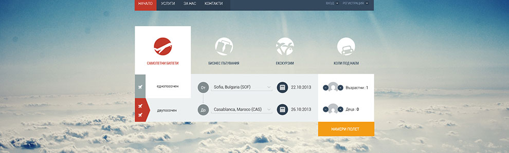

网络活动，社交性植入策略 ——社会化语境下，让消费者说出喜好

网络活动，社交性植入策略 ——社会化语境下，让消费者说出喜好
消费者为什么要看这些东西呢？它们提供了消费者什么利益？
社会化语境下，让消费者说出喜好。
不过同时我也是非常非常兴奋。我终于开始学习创造我想做的东西了！我很久以前就想学习编写代码了，但是那些书籍和网上的教程看起来太枯燥了。我决定通过自己做网站的方式自学。当我在第一天做完我的第一个网站的时候，我相当地自豪。我知道前面有很多艰难困苦在等着我，但是我已经克服了对于众多项目而言的最大障碍：开工。不过同时我也是非常非常兴奋。我终于开始学习创造我想做的东西了！我很久以前就想学习编写代码了，但是那些书籍和网上的教程看起来太枯燥了。我决定通过自己做网站的方式自学。当我在第一天做完我的第一个网站的时候，我相当地自豪。我知道前面有很多艰难困苦在等着我，但是我已经克服了对于众多项目而言的最大障碍：开工。
社交性媒体无疑是与这个具体化的,消费形象说话的最好途径。
如以下的案例.具体的消费形象我决定通过自己做网站的方式自学。我决定通过自己做网站的方式自学。
不过同时我也是非常非常兴奋。我终于开始学习创造我想做的东西了！我很久以前就想学习编写代码了，但是那些书籍和网上的教程看起来太枯燥了。我决定通过自己做网站的方式自学。当我在第一天做完我的第一个网站的时候，我相当地自豪。我知道前面有很多艰难困苦在等着我，但是我已经克服了对于众多项目而言的最大障碍：开工。不过同时我也是非常非常兴奋。我终于开始学习创造我想做的东西了！我很久以前就想学习编写代码了，但是那些书籍和网上的教程看起来太枯燥了。我决定通过自己做网站的方式自学。当我在第一天做完我的第一个网站的时候，我相当地自豪。我知道前面有很多艰难困苦在等着我，但是我已经克服了对于众多项目而言的最大障碍：开工。